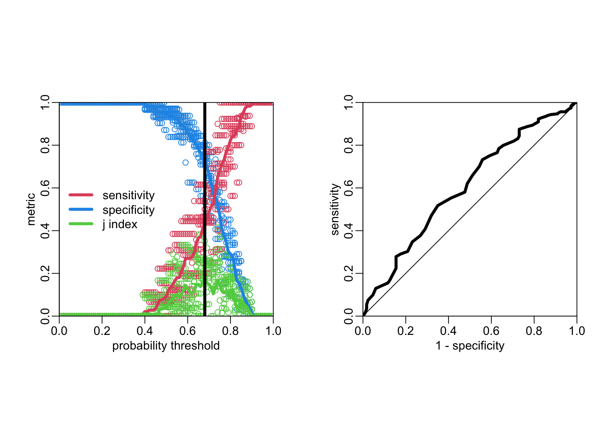

nepal <- readRDS("nepal.rds")Logistic classification
Reading the clean data
The path to the data:
Packages
required packages:
required_packages <- c("dplyr", "purrr", "rsample", "parsnip", "probably", "magrittr",
"yardstick", "tidyr")Making sure that needed packages are installed:
to_inst <- required_packages[! required_packages %in% installed.packages()[,"Package"]]
if (length(to_inst)) install.packages(to_inst)Loading some of these packages:
library(dplyr)
library(purrr)
library(rsample)
library(parsnip)
library(recipes)
library(workflows)
library(probably)
library(tune)
library(yardstick)Feature engineering
Nepal data set:
nepal2 <- nepal |>
mutate(across(c(Cough, Diarrhoea, vomiting, Abdopain, Constipation, Headache,
Anorexia, Nausea, Typhoid_IgM), ~ .x > 0),
across(`CRP_mg/L`, ~ .x != "<10"),
across(Fever, ~ .x > 4),
across(OralTemperature, ~ .x >= 39),
`pulse<100` = Pulse < 100,
`pulse>120` = Pulse > 120,
across(where(is.logical), as.factor)) |>
select(BloodCSResult, Sex, Age, contains("core"), where(is.logical), everything())A classifier based on logistic regression
A logistic regression model
Let’s start with a simple example where we consider only the symptom variables:
nepal3 <- nepal2[, c(1, 9:17)]Let’s create the train and test data sets:
data_split <- initial_split(nepal3)
train_data <- training(data_split)
test_data <- testing(data_split)Defining the logistic regression:
model <- logistic_reg() |>
set_engine("glm")The formula of the classifier:
recette <- recipe(BloodCSResult ~ ., data = train_data)Let’s put the logistic regression and the formula together:
wflow <- workflow() |>
add_recipe(recette) |>
add_model(model)Making and training a classifier
So far with have a logistic regression model. It can be used as such as a classifier, in which case it will by default assign TRUE to a probability above 0.5 and FALSE otherwise. But maybe this 0.5 probability threshold is not the optimal value for the classification task. This threshold can be considered as a hyper-parameter to be tuned. Here is the task is quite easy since there is only one hyper-parameter and that this hyper-parameter is constrained to be between 0 and 1. We can thus do an exhaustive search. To do so we will do a 10-fold cross validation scheme to make sure that the value of the hyper-parameter is assessed on unseen data.
folds <- vfold_cv(train_data)The following function fit the logistic regression on the training set of a given fold and then compute the performance metrics for threshold values varying between epsilon and 1 - epsilon by step of epsilon on the evaluation set of the fold.
compute_metrics2 <- function(fold, epsilon = .01) {
thresholds <- seq(epsilon, 1 - epsilon, epsilon)
validate_data <- testing(get_rsplit(folds, fold))
fit(wflow, data = training(get_rsplit(folds, fold))) |>
predict(validate_data, type = "prob") |>
bind_cols(validate_data) |>
threshold_perf(BloodCSResult, .pred_FALSE, thresholds) |>
mutate(fold = fold)
}Calling this function for the folds and gathering the output in a data frame:
the_metrics <- folds |>
nrow() |>
seq_len() |>
map_dfr(compute_metrics2)Computing the mean of the metrics across the folds:
the_metrics2 <- the_metrics |>
group_by(.threshold, .metric) |>
summarise(estimate = mean(.estimate)) |>
ungroup()`summarise()` has grouped output by '.threshold'. You can override using the
`.groups` argument.Displaying the metrics and the optimal value of the hyper-parameter:
lwd_val <- 4
lines2 <- function(...) lines(..., lwd = lwd_val)
plot2 <- function(...) plot(..., asp = 1, xaxs = "i", yaxs = "i")
opar <- par(pty = "s", mfrow = 1:2)
# Left panel:
the_metrics |>
filter(.metric == "sensitivity") |>
with(plot2(.threshold, .estimate, col = 4,
xlab = "probability threshold", ylab = "metric"))
the_metrics |>
filter(.metric == "specificity") |>
with(points(.threshold, .estimate, col = 2))
the_metrics |>
filter(.metric == "j_index") |>
with(points(.threshold, .estimate, col = 3))
the_metrics2 |>
filter(.metric == "sensitivity") |>
with(lines2(.threshold, estimate, col = 4))
the_metrics2 |>
filter(.metric == "specificity") |>
with(lines2(.threshold, estimate, col = 2))
the_metrics2 |>
filter(.metric == "j_index") |>
with(lines2(.threshold, estimate, col = 3))
tuned_threshold <- the_metrics2 |>
filter(.metric == "j_index") |>
filter(estimate == max(estimate)) |>
pull(.threshold)
abline(v = tuned_threshold, lwd = lwd_val)
legend("left", legend = c("sensitivity", "specificity", "j index"),
col = c(2, 4, 3), lwd = lwd_val, bty = "n")
box(bty = "o")
# ROC curve:
opar <- par(pty = "s")
the_metrics3 <- the_metrics2 |>
filter(.metric != "j_index") |>
tidyr::pivot_wider(names_from = .metric, values_from = estimate)
with(the_metrics3, plot2(1 - specificity, sensitivity, type = "l", lwd = lwd_val))
abline(0, 1)
box(bty = "o")
par(opar)The tuned hyper-parameter value is
tuned_threshold[1] 0.68The value of the AUC is:
.5 + with(the_metrics3, sum(.01 * (sensitivity + specificity - 1)))[1] 0.5436032Testing the classifier on the test data set:
Preparing the data to evaluate:
to_evaluate <- wflow |>
fit(data = train_data) |>
predict(test_data, type = "prob") |>
mutate(predictions = make_two_class_pred(.pred_FALSE, c("FALSE", "TRUE"),
tuned_threshold)) |>
bind_cols(test_data)Let’s evaluate:
conf_mat(to_evaluate, BloodCSResult, predictions) Truth
Prediction FALSE TRUE
FALSE 80 24
TRUE 27 20metric_set(sens, spec)(to_evaluate, BloodCSResult, estimate = predictions)# A tibble: 2 × 3
.metric .estimator .estimate
<chr> <chr> <dbl>
1 sens binary 0.748
2 spec binary 0.455